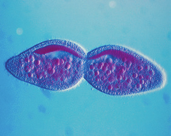
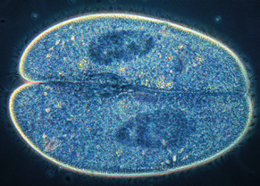
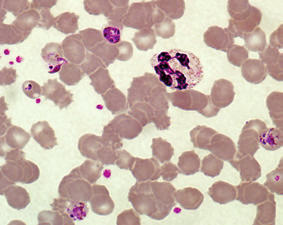
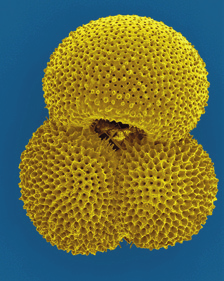
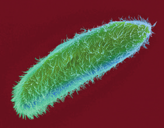
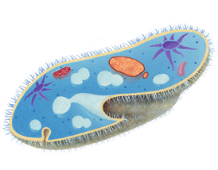
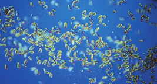

Los protozoos son organismos eucariotas heterótrofos, generalmente unicelulares. Sus células presentan ribosomas, mitocondrias y vacuolas.
Pueden tener alrededor de la membrana un caparazón de sales minerales.
Suelen ser móviles mediante cilios, flagelos o pseudópodos.
Las funciones vitales de los protozoos
Su nutrición es heterótrofa. Pueden ser depredadores (se alimentan de materia orgánica viva) o detritívoros (toman la materia orgánica muerta).
Se relacionan con el medio, respondiendo con movimientos a cambios de temperatura, intensidad luminosa, salinidad, etc.
Pueden reproducirse de forma asexual, normalmente por bipartición o pluripartición, o de manera sexual, que puede ser por conjugación.
Bipartición
Una célula madre de Paramecium da lugar a dos células hijas de igual tamaño.

Bipartición en protozoos
Pluripartición
Plasmodium vivax se reproduce por pluripartición en los glóbulos rojos humanos.

Vista microscópica de un protozoo
Conjugación
Algunos protozoos se reproducen sexualmente por conjugación. Este procedimiento consiste en la unión temporal de dos individuos que intercambian una copia de su material genético.

Vista microscópica de células sanguíneas
¿Cómo se desplazan los protozoos?
Los cilios (muchos y cortos) y los flagelos (pocos y largos) son finos apéndices cuyos movimientos provocan el desplazamiento de la célula que los posee.
Los pseudópodos son prolongaciones del citoplasma que producen el desplazamiento celular.

Vista microscópica de granos de polen

Vista microscópica de una bacteria

Ilustración de una bacteria

Vista microscópica de algas